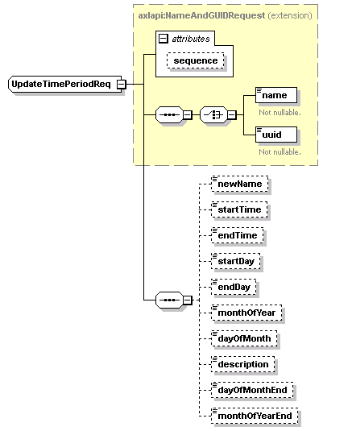

| diagram |
 |
| namespace |
http://www.cisco.com/AXL/API/10.5 |
| type |
extension of axlapi:NameAndGUIDRequest |
| properties |
| base | axlapi:NameAndGUIDRequest |
|
| children |
name uuid newName startTime endTime startDay endDay monthOfYear dayOfMonth description dayOfMonthEnd monthOfYearEnd |
| used by |
|
| attributes |
| Name | Type | Use | Default | Fixed | Annotation | | sequence | xsd:unsignedLong | optional | | | |
|
| source |
<xsd:complexType name="UpdateTimePeriodReq">
<xsd:complexContent>
<xsd:extension base="axlapi:NameAndGUIDRequest">
<xsd:sequence>
<xsd:element name="newName" type="axlapi:String50" nillable="false" minOccurs="0" maxOccurs="1"/>
<xsd:element name="startTime" type="axlapi:XTimeOfDay" default="No Office Hours" nillable="false" minOccurs="0" maxOccurs="1"/>
<xsd:element name="endTime" type="axlapi:XTimeOfDay" default="No Office Hours" nillable="false" minOccurs="0" maxOccurs="1"/>
<xsd:element name="startDay" type="axlapi:XDayOfWeek" default="None" nillable="false" minOccurs="0" maxOccurs="1"/>
<xsd:element name="endDay" type="axlapi:XDayOfWeek" default="None" nillable="false" minOccurs="0" maxOccurs="1"/>
<xsd:element name="monthOfYear" type="axlapi:XMonthOfYear" default="None" nillable="false" minOccurs="0" maxOccurs="1"/>
<xsd:element name="dayOfMonth" type="axlapi:XInteger" default="0" nillable="false" minOccurs="0" maxOccurs="1"/>
<xsd:element name="description" type="axlapi:String255" nillable="false" minOccurs="0" maxOccurs="1"/>
<xsd:element name="dayOfMonthEnd" type="axlapi:XInteger" default="0" nillable="false" minOccurs="0" maxOccurs="1"/>
<xsd:element name="monthOfYearEnd" type="axlapi:XMonthOfYear" default="None" nillable="false" minOccurs="0" maxOccurs="1"/>
</xsd:sequence>
</xsd:extension>
</xsd:complexContent>
</xsd:complexType> |